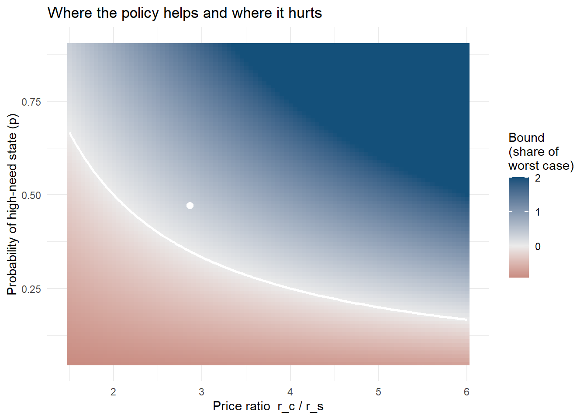
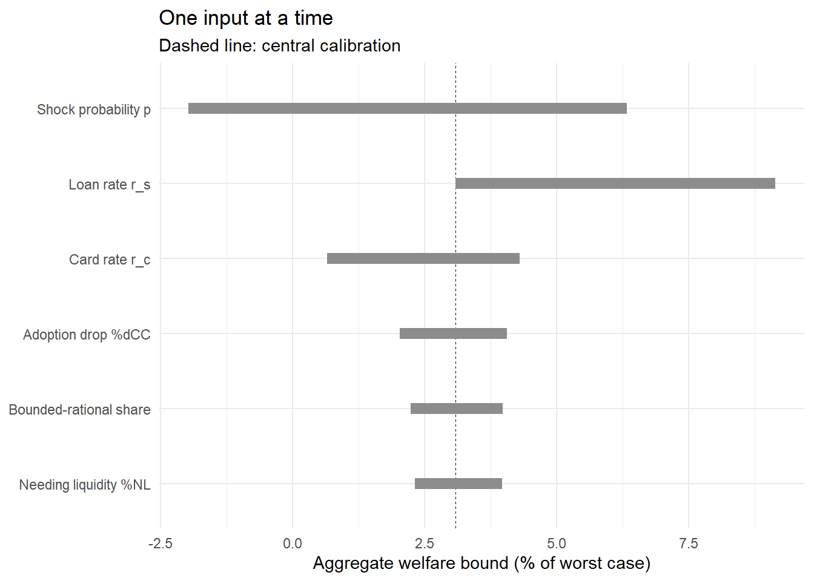

flowchart LR M["Normative model of<br/>optimal behavior"] --> A["Full structural estimation"] M --> B["Sufficient statistics"] M --> C["Bounds under a<br/>worst-case normalization"] A --> A2["Needs: functional forms,<br/>identification of every<br/>welfare-relevant parameter<br/>Gives: dollars, distribution,<br/>unobserved counterfactuals"] B --> B2["Needs: a sufficiency proof<br/>plus a few elasticities<br/>Gives: local welfare change,<br/>robust to deep parameters"] C --> C2["Needs: a defined worst case<br/>plus a concavity argument<br/>Gives: signed bound valid for<br/>a whole preference class"]
71 Calibration and Welfare Bounds
The normative model of Chapter 70 tells us what an optimizing consumer should do. The reduced-form design of Chapter 69 tells us what consumers actually did when a policy moved them. Neither says whether they were made better off. This chapter closes that gap, and it does so without estimating the model.
That last clause is the methodological point. The instinctive route from a model to a welfare number is full structural estimation: assume a utility function, estimate its parameters, simulate the counterfactual. That route is often unavailable, not because of computation but because theory does not pin down the functional forms, and the answer turns out to depend on the arbitrary choices (Rust 2014; Nevo and Whinston 2010). The alternative developed here is to normalize the unknown utility away, derive a bound that holds for every utility function in a stated class, and calibrate the handful of quantities the bound actually contains. In the anchor application the entire welfare conclusion rests on two posted interest rates and one elicited probability.
71.1 Three Routes From Model to Welfare Number
Before building the bound it is worth seeing where it sits among the alternatives, because the choice among them is a real design decision with real costs.
Full structural estimation. Specify preferences, estimate parameters from choices, and compute compensating variation under the counterfactual. This gives the most complete answer—distributional detail, general-equilibrium effects, policies never observed—and demands the most: identification of every parameter that enters the welfare integral, and defensible functional forms. It is the right route when the counterfactual is far from anything in the data and when the functional forms are disciplined by something other than convenience (Chapter 36).
Sufficient statistics. Show that the welfare derivative depends on the deep parameters only through a small number of estimable elasticities, then estimate those (Chetty 2009; Kleven 2021). This is the dominant approach in modern public finance: it buys robustness by refusing to identify anything it does not need. Its limits are that it is local—valid for marginal policy changes—and that the sufficiency result must be derived anew for each setting. The marginal-value-of-public-funds framework is the large-scale application (Hendren and Sprung-Keyser 2020).
Bounds under a normalization. Derive the worst possible welfare outcome for the policy, express every other case as a fraction of it, and show that a linear approximation to the unknown utility is conservative. This delivers a signed, scaled answer valid for an entire class of preferences, at the cost of reporting a range rather than a point and of saying nothing about magnitudes in dollars without an extra step. It is the right route when the policy change is discrete, the preference class is wide, and credibility matters more than precision.
Figure 71.1 lays out the trade-off.
71.2 Constructing the Bound
We work with the model of Chapter 70. Recall its objects: an uncertain shortfall \(\Gamma\), a high-need state occurring with probability \(p\), rates \(r^{s} < r^{c}\) on the committed and flexible instruments, baseline debt levels \(A_h\) and \(A_\ell\) carried into each state, and a continuation value \(V_t\) that is decreasing and weakly concave in debt.
71.2.1 Step 1: define the worst case
Ask what the most damaging possible version of the policy looks like. It is the case in which every consumer chooses optimally and the shock probability is vanishingly small: \(p \to 0\). Because the requirement must still be met if the shock occurs, the consumer must have liquidity available; the flexible instrument is exactly the right tool, since it costs nothing unless drawn. Forcing her onto the committed instrument makes her pay \(r^{s}\Gamma\) in interest on money she almost certainly will not need. Define the magnitude of that loss:
\[ L \;\equiv\; V_t(A_\ell) \;-\; V_t\!\left(A_\ell + r^{s}\Gamma\right) \;>\; 0 . \tag{71.1}\]
\(L\) is unknown—it depends on the utility function we refused to specify—but it is a fixed positive number for any given consumer, and every welfare change in this model can be expressed relative to it. That is the trick.
71.2.2 Step 2: show the linear case is the conservative case
Consider the linear function that passes through the two points defining \(L\):
\[ \mathcal{L}_t(d) \;=\; \frac{V_t\!\left(A_\ell + r^{s}\Gamma\right) - V_t(A_\ell)}{r^{s}\Gamma}\; d \;=\; -\,\frac{L}{r^{s}\Gamma}\, d . \tag{71.2}\]
Because \(V_t\) is weakly concave and decreasing, replacing it with the chord \(\mathcal{L}_t\) understates the utility benefit of moving debt out of the high-debt state and into the low-debt state. Any welfare gain computed with the linear approximation is therefore a lower bound on the true gain (Brown, Grodzicki, and Medina 2026). This is what makes the exercise honest: if the linear calculation says the policy helped, curvature can only help it more.
71.2.3 Step 3: evaluate the two consumer types
For a consumer who chooses optimally, the welfare change from losing access to the flexible instrument is
\[ \Delta W^{\text{opt}} \;=\; (1-p)\left[V_t\!\left(A_\ell + r^{s}\Gamma\right) - V_t\!\left(A_\ell + r^{s}\gamma^{*}\right)\right] \;+\; p\left[V_t(A_h) - V_t\!\left(A_h + (r^{c}-r^{s})(\Gamma-\gamma^{*})\right)\right], \tag{71.3}\]
and for a consumer who—because she misunderstands the terms, the concepts, or her own available options—uses the flexible instrument regardless of \(p\),
\[ \Delta W^{\text{bd}} \;=\; (1-p)\left[V_t\!\left(A_\ell + r^{s}\Gamma\right) - V_t(A_\ell)\right] \;+\; p\left[V_t(A_h) - V_t\!\left(A_h + (r^{c}-r^{s})\Gamma\right)\right]. \tag{71.4}\]
Substituting the linear form Equation 71.2 with slope magnitude \(m = L/(r^{s}\Gamma)\) and dividing through by \(L\) collapses both expressions to functions of two numbers. For the boundedly rational consumer,
\[ \frac{\Delta W^{\text{bd}}}{L} \;=\; \frac{m\Gamma\left(p\,r^{c} - r^{s}\right)}{m\,r^{s}\Gamma} \;=\; p\,\frac{r^{c}}{r^{s}} \;-\; 1 , \tag{71.5}\]
and for the optimizer, whose \(\gamma^{*}\) is \(\Gamma\) when \(p \ge r^{s}/r^{c}\) and \(0\) otherwise,
\[ \frac{\Delta W^{\text{opt}}}{L} \;=\; \begin{cases} p\,\dfrac{r^{c}}{r^{s}} - 1 \;(<0), & p < \dfrac{r^{s}}{r^{c}},\\[10pt] 0, & p \ge \dfrac{r^{s}}{r^{c}} . \end{cases} \tag{71.6}\]
These two expressions carry the entire welfare analysis. Three properties deserve emphasis.
The preference function is gone. Equation 71.5 contains no utility parameter. It holds for every \(V_t\) in the assumed class, and it is a lower bound because of Step 2.
The scale is interpretable. A value of \(-1\) means the policy inflicted the full worst-case harm; \(0\) means no effect; a value above \(0\) means net benefit, and values above \(1\) mean the benefit exceeds the worst-case harm in magnitude.
There is a single break-even condition. Both expressions are positive exactly when
\[ p \;>\; \frac{r^{s}}{r^{c}} . \tag{71.7}\]
The policy raises welfare, on average, if and only if the probability of the high-need state exceeds the ratio of the two interest rates. With a 6.8 percent loan rate and a 19.5 percent card rate, that threshold is roughly 35 percent (Brown, Grodzicki, and Medina 2026). This is the whole argument, and it fits on one line.
71.2.4 Step 4: aggregate to a population
An individual-level bound becomes a policy conclusion only after accounting for who was actually affected. Three adjustments are required, and each corresponds to a measurable share. Not everyone stopped using the flexible instrument (\(\%\Delta CC\), the drop in adoption). Not everyone needs liquidity at all (\(\%NL\), the share who could not simply ask family). And among those affected, some optimize and some do not (\(\hat{p}^{bd}\), the boundedly rational share). Writing \(\hat{p}\) for the elicited shock probability among those needing liquidity,
\[ \overline{\Delta W}^{\text{opt}} \;=\; (\%\Delta CC)\,(\%NL)\cdot \min\!\left\{0,\; \hat{p}\,\frac{\overline{r}^{c}}{\overline{r}^{s}} - 1\right\}, \tag{71.8}\]
\[ \overline{\Delta W}^{\text{bd}} \;=\; (\%\Delta CC)\,(\%NL)\cdot\left[\hat{p}\,\frac{\overline{r}^{c}}{\overline{r}^{s}} - 1\right], \tag{71.9}\]
\[ \overline{\Delta W} \;=\; \left(1-\hat{p}^{bd}\right)\overline{\Delta W}^{\text{opt}} \;+\; \hat{p}^{bd}\,\overline{\Delta W}^{\text{bd}} . \tag{71.10}\]
Figure 71.2 shows the full pipeline from model to number.
flowchart TB MOD["Normative model:<br/>threshold rule in p and r_s / r_c"] --> WC["Define worst case L:<br/>all optimize, p near zero"] WC --> LIN["Linear chord is conservative<br/>because V is concave"] LIN --> IND["Per-consumer bound:<br/>p (r_c / r_s) minus 1"] IND --> AGG["Aggregate over affected population"] R1["Posted loan rates<br/>(Dept. of Education)"] --> IND R2["Card rates by risk tier<br/>(regulator market report)"] --> IND S1["Elicited shock probability p<br/>(survey: emergencies last year)"] --> IND S2["Drop in adoption %dCC<br/>(pre vs post national surveys)"] --> AGG S3["Share needing liquidity %NL<br/>(survey: would you ask family?)"] --> AGG S4["Boundedly rational share<br/>(literacy items + record mismatch)"] --> AGG AGG --> OUT["Signed welfare range,<br/>overall and by subgroup"]
71.3 Calibration Discipline
A bound is only as credible as its inputs, and the review process will interrogate each one. The discipline is to state, for every quantity, where the number comes from, what it would take to be wrong, and in which direction the error pushes the conclusion.
| Quantity | Source | Direction if mismeasured | Defense |
|---|---|---|---|
| \(r^{s}\), committed-instrument rate | Posted federal loan rates in the policy year | Understating raises the break-even \(p\), making benefit harder to find | Posted, non-negotiable, identical across consumers |
| \(r^{c}\), flexible-instrument rate | Regulator market report, by credit-risk tier | Overstating inflates the benefit | Report a range across tiers, not a point |
| \(p\), shock probability | Survey: emergency expenditures experienced last year | Overstating inflates the benefit | Cross-check retrospective against prospective elicitation |
| \(\%\Delta CC\), adoption drop | Pre-policy national survey vs. own post-policy survey | Overstating scales all effects up | Anchor to an independent industry survey |
| \(\%NL\), share needing liquidity | Survey: would not ask family in an emergency | Overstating scales effects up | Conservative coding of ambiguous responses |
| \(\hat{p}^{bd}\), boundedly rational share | Literacy items plus survey-versus-record mismatch on available credit | Overstating shifts weight to the positive branch | Report the optimizer branch separately so readers can reweight |
Do not calibrate to the outcome you are explaining
The cardinal sin is to pick parameters so that the model reproduces the treatment effect, then present the implied welfare number as evidence. The estimate and the calibration must draw on non-overlapping information: here, the treatment effect comes from administrative borrowing records, while the calibration comes from posted rates, a regulator’s market report, and a survey. When the two do coincide—as when a moment used in calibration is also an estimated outcome—say so explicitly and show the result with that moment excluded.
71.4 Reproducing the Welfare Table
The following code implements Equation 71.8 through Equation 71.10 and reproduces the published welfare bounds of Brown, Grodzicki, and Medina (2026) from its reported inputs. It is worth running not because the arithmetic is hard but because a welfare table whose every cell can be regenerated from six numbers is the strongest possible demonstration that the analysis contains no hidden degrees of freedom.
Code
# --- Calibration inputs, as reported in the source study ---------------------
# Rate ranges: subsidized/unsubsidized federal loan rates in 2010, and prime/
# subprime average card rates from the regulator's CARD Act market report.
rs_range <- c(low = 0.068, high = 0.045) # high benefit uses the LOWER loan rate
rc_range <- c(low = 0.195, high = 0.215) # high benefit uses the HIGHER card rate
# Survey-calibrated population shares, overall and by ZIP income quartile.
cal <- data.frame(
group = c("All", "0-25 pctl", "25-50 pctl", "50-75 pctl", "75-100 pctl"),
d_cc = c(30.35, 33.25, 36.90, 27.06, 22.22) / 100, # drop in card adoption
need_l = c(46.61, 52.50, 43.17, 45.80, 44.61) / 100, # share needing liquidity
p_hat = c(47.12, 56.19, 49.72, 43.04, 35.57) / 100, # prob. of high state
p_bd = c(62.06, 69.25, 62.93, 62.03, 52.40) / 100 # boundedly rational share
)
# --- The bound itself --------------------------------------------------------
per_consumer <- function(p, rc, rs) p * (rc / rs) - 1 # eq. 13 scaled
welfare_bounds <- function(d_cc, need_l, p_hat, p_bd) {
scale <- d_cc * need_l
ends <- c("low", "high")
bd <- sapply(ends, function(e) scale * per_consumer(p_hat, rc_range[[e]], rs_range[[e]]))
opt <- sapply(ends, function(e) scale * min(0, per_consumer(p_hat, rc_range[[e]], rs_range[[e]])))
tot <- (1 - p_bd) * opt + p_bd * bd
c(opt_lo = opt[["low"]], opt_hi = opt[["high"]],
bd_lo = bd[["low"]], bd_hi = bd[["high"]],
tot_lo = tot[["low"]], tot_hi = tot[["high"]])
}
res <- t(mapply(welfare_bounds, cal$d_cc, cal$need_l, cal$p_hat, cal$p_bd))
out <- data.frame(group = cal$group, round(100 * res, 2))
out
#> group opt_lo opt_hi bd_lo bd_hi tot_lo tot_hi
#> 1 All 0 0 4.97 17.70 3.08 10.99
#> 2 0-25 pctl 0 0 10.67 29.41 7.39 20.36
#> 3 25-50 pctl 0 0 6.78 21.91 4.27 13.79
#> 4 50-75 pctl 0 0 2.90 13.09 1.80 8.12
#> 5 75-100 pctl 0 0 0.20 6.93 0.10 3.63Read the table as the source study does. The optimizer branch is exactly zero everywhere, because the calibrated shock probability exceeds the break-even ratio \(r^{s}/r^{c}\) in every subgroup: for a consumer who was already choosing well, the policy is non-binding. Among the boundedly rational the gain is 5 to 18 percent of the worst-case magnitude overall, and the population-weighted total is 3 to 11 percent. The gradient across quartiles is the substantive result: 7 to 20 percent for the least affluent, 0.1 to 4 percent for the most affluent—the same ordering the reduced-form spillover estimates produced, arrived at through an entirely different chain of reasoning.
Why the two branches move for different reasons
The optimizer branch is zero not because optimizers are unaffected in general but because at these calibrated values they were already fully insuring. Lower the shock probability below \(r^{s}/r^{c}\) and the branch turns negative immediately: the policy would then be destroying a genuinely useful option. The bound is therefore not rigged toward a favorable answer; it is one calibrated input away from delivering an unfavorable one.
71.5 Sensitivity Analysis Is the Result
In a bounds exercise the sensitivity analysis is not a robustness appendix; it is the substance, because the reader’s real question is how far the inputs would have to move to flip the sign. Three presentations do most of the work.
The break-even surface. Plot the welfare bound over the two quantities that actually enter it, and mark the zero contour.
Code
library(ggplot2)
surf <- expand.grid(p = seq(0.05, 0.90, by = 0.01),
ratio = seq(1.5, 6.0, by = 0.05)) # ratio = r_c / r_s
surf$bound <- surf$p * surf$ratio - 1
central <- data.frame(p = 0.4712, ratio = 0.195 / 0.068)
ggplot(surf, aes(ratio, p)) +
geom_raster(aes(fill = pmax(pmin(bound, 2), -1))) +
geom_contour(aes(z = bound), breaks = 0, colour = "white", linewidth = 0.9) +
geom_point(data = central, size = 2.4, colour = "white") +
scale_fill_gradient2(name = "Bound\n(share of\nworst case)",
low = "#8c1616", mid = "grey92", high = "#14507a",
midpoint = 0) +
labs(x = "Price ratio r_c / r_s",
y = "Probability of high-need state (p)",
title = "Where the policy helps and where it hurts") +
theme_minimal(base_size = 11)
The break-even input. Report, for each subgroup, the value of the pivotal input at which the conclusion flips. This is more useful to a policy audience than a confidence interval, because it is stated in the units of the thing they might dispute.
Code
breakeven <- data.frame(
group = cal$group,
p_calibrated = cal$p_hat,
p_breakeven = 0.068 / 0.195, # conservative rate pair
slack = cal$p_hat - 0.068 / 0.195
)
breakeven$verdict <- ifelse(breakeven$slack > 0, "net benefit", "net harm")
round_cols <- c("p_calibrated", "p_breakeven", "slack")
breakeven[round_cols] <- lapply(breakeven[round_cols], round, 3)
breakeven
#> group p_calibrated p_breakeven slack verdict
#> 1 All 0.471 0.349 0.122 net benefit
#> 2 0-25 pctl 0.562 0.349 0.213 net benefit
#> 3 25-50 pctl 0.497 0.349 0.148 net benefit
#> 4 50-75 pctl 0.430 0.349 0.082 net benefit
#> 5 75-100 pctl 0.356 0.349 0.007 net benefitEven the most affluent quartile, with the lowest elicited emergency probability, sits above the conservative break-even threshold—but only barely, which is the honest way to describe a result whose sign is secure and whose magnitude is not.
One-way sensitivity. Vary each input across its plausible range holding the rest at their central values, and show the resulting swing in the aggregate.
Code
base <- list(d_cc = 0.3035, need_l = 0.4661, p_hat = 0.4712,
p_bd = 0.6206, rc = 0.195, rs = 0.068)
agg <- function(x) {
bd <- x$d_cc * x$need_l * (x$p_hat * x$rc / x$rs - 1)
opt <- x$d_cc * x$need_l * min(0, x$p_hat * x$rc / x$rs - 1)
100 * ((1 - x$p_bd) * opt + x$p_bd * bd)
}
ranges <- list(
`Shock probability p` = list(p_hat = c(0.30, 0.60)),
`Card rate r_c` = list(rc = c(0.155, 0.215)),
`Loan rate r_s` = list(rs = c(0.045, 0.068)),
`Adoption drop %dCC` = list(d_cc = c(0.20, 0.40)),
`Needing liquidity %NL` = list(need_l = c(0.35, 0.60)),
`Bounded-rational share` = list(p_bd = c(0.45, 0.80))
)
rows <- do.call(rbind, lapply(names(ranges), function(nm) {
par <- names(ranges[[nm]]); vals <- ranges[[nm]][[1]]
lo <- base; lo[[par]] <- vals[1]
hi <- base; hi[[par]] <- vals[2]
data.frame(input = nm, low = agg(lo), high = agg(hi))
}))
rows$span <- abs(rows$high - rows$low)
rows$input <- factor(rows$input, levels = rows$input[order(rows$span)])
ggplot(rows) +
geom_hline(yintercept = agg(base), linetype = "dashed", linewidth = 0.3) +
geom_segment(aes(x = input, xend = input, y = low, yend = high),
linewidth = 3.2, colour = "grey55") +
coord_flip() +
labs(x = NULL, y = "Aggregate welfare bound (% of worst case)",
title = "One input at a time",
subtitle = "Dashed line: central calibration") +
theme_minimal(base_size = 11)
71.6 Failure Modes
Welfare calibration goes wrong in recognizable ways, and reviewers know all of them.
Calling profit “welfare.” A firm-side calculation of incremental margin is not a welfare analysis. If the paper’s welfare object is consumer surplus, the firm’s response must either be shown to be irrelevant or be modeled; if the object is total surplus, the producer side must be counted. State the object in the first paragraph of the welfare section.
Ignoring the supply side. Restricting one marketing instrument changes firms’ incentives, and equilibrium price and product responses can undo or amplify the consumer-side conclusion (Gabaix and Laibson 2006; Johnson, Shriver, and Goldberg 2023). A partial analysis is defensible when the treated market is small relative to the firms’ scale; it must be argued, not assumed.
Unbounded or ill-defined worst cases. The normalization in Equation 71.1 works because the worst case is finite and well-defined. If the worst case is unbounded—if a consumer could in principle be driven to a \(-\infty\) region of the utility function—the scaling is meaningless, and the analysis must restrict the domain first, as the anchor model does by assuming enough liquidity to meet subsistence.
Using revealed preference where the paper has argued preferences are unreliable. This is the deepest tension in behavioral welfare economics: the same evidence that establishes consumers make mistakes disqualifies their choices as the welfare metric (Bernheim and Rangel 2009). The bounds approach handles it by evaluating each type against the model’s optimum rather than against its own revealed choice, and by reporting the optimizer branch separately so a reader who rejects the paternalistic premise can read the number that assumes it away.
Local answers presented as global. Sufficient-statistic and marginal-elasticity formulas are valid for small changes (Chetty 2009). A campus-wide elimination of card marketing is not a small change, which is one reason a discrete bounds argument suits it better.
The welfare claim is a modeling claim, and should be labeled as one
The strongest phrasing available to a bounds paper is that model-based evidence implies the policy raised welfare, under a stated preference class and a stated calibration. That is weaker than “we estimate that welfare rose by $X” and much more defensible. Papers that overclaim here invite a referee to attack the weakest input, and there is always a weakest input.
71.7 Marketing Applications
The template applies wherever a firm or regulator moves consumers between two instruments whose prices are observable and whose optimal use is characterizable.
Plan and bundle migration. When a carrier retires an à la carte option, the migrated customer’s welfare change is governed by the same ratio of committed to contingent price and the probability of the usage event. The break-even usage rate is computable before any estimation.
Promotion restrictions and price-display rules. Restricting a promotional instrument moves purchases to other instruments; the welfare object is whether the destination instrument is cheaper for the consumer at her usage frequency.
Privacy and targeting regimes. Here the flexible instrument is precise targeting and the committed one is broad reach. Bounding the consumer-side effect requires the analogue of \(p\)—the probability that the targeted occasion arises—and the analogue of the price ratio, the cost premium of reaching the consumer without targeting (Goldfarb and Tucker 2011; Aridor, Che, and Salz 2023).
Default architecture. When a firm changes a default, the affected population is those who would not have opted in, the “price ratio” is the cost difference between the default and the alternative, and the boundedly rational share is the group for whom the default is binding rather than preferred (Choi et al. 2003; Allcott and Kessler 2019).
Sin-good marketing. Excise taxes and advertising bans on unhealthy categories have an established optimal-policy literature that combines an internality parameter with demand elasticities (Allcott, Lockwood, and Taubinsky 2019a, 2019b; O’Donoghue and Rabin 2006); a marketing paper can contribute the demand and substitution side, which is where the field’s comparative advantage lies (Seiler, Tuchman, and Yao 2020; Dubois, Griffith, and O’Connell 2018).
71.8 Key Takeaways
- There are three routes from a normative model to a welfare number—full structural estimation, sufficient statistics, and bounds under a normalization—and the bounds route trades precision for validity across an entire preference class.
- The construction is: define the worst case (Equation 71.1), show the linear chord is conservative because the value function is concave (Equation 71.2), and express every welfare change as a fraction of the worst case.
- The result is a formula with no preference parameters in it: \(\Delta W / L = p\,(r^{c}/r^{s}) - 1\) (Equation 71.5), with a single break-even condition \(p > r^{s}/r^{c}\) (Equation 71.7).
- Aggregation requires three measured shares—who stopped using the instrument, who needed liquidity, and who was choosing badly—and each enters at exactly one place (Equation 71.10).
- Publish a calibration ledger (Table 71.1) naming the source and the direction of bias for every input; a welfare table that can be regenerated from six numbers has no hidden degrees of freedom.
- In a bounds paper the sensitivity analysis is the result: report the break-even value of the pivotal input, the surface over the two quantities that matter, and a one-way sensitivity range.
- The most common failures are calling profit welfare, ignoring firm response, normalizing by an unbounded worst case, using revealed preference after arguing preferences are unreliable, and presenting local formulas as global answers.
71.9 Further Reading
The bounds construction is developed in Brown, Grodzicki, and Medina (2026); the general case for behavioral welfare analysis that does not treat choice as automatically revealing preference is Bernheim and Rangel (2009). For the sufficient-statistics alternative, start with Chetty (2009) and the modern reassessment in Kleven (2021), then Hendren and Sprung-Keyser (2020) for large-scale application and Einav, Finkelstein, and Cullen (2010) for an influential worked case in insurance. Chetty (2015) is the best short statement of how behavioral parameters enter policy design; Allcott, Lockwood, and Taubinsky (2019a) and O’Donoghue and Rabin (2006) give the optimal-tax treatment of internalities, with Allcott, Lockwood, and Taubinsky (2019b) as the accessible summary. Allcott and Kessler (2019) is the closest methodological cousin to the exercise here—a welfare evaluation of a nudge that takes the possibility of harm seriously. On partial identification as a general strategy, Tamer (2010) and Manski and Tamer (2002). The structural alternative and its critics are covered in Nevo and Whinston (2010), Rust (2014), and DellaVigna (2018); the estimation machinery itself is in Chapter 36, and the identification background in Chapter 42.
Allcott, Hunt, and Judd B. Kessler. 2019. “The Welfare Effects of Nudges: A Case Study of Energy Use Social Comparisons.” American Economic Journal: Applied Economics 11 (1): 236–76. https://doi.org/10.1257/app.20170328.
Allcott, Hunt, Benjamin B. Lockwood, and Dmitry Taubinsky. 2019a. “Regressive Sin Taxes, with an Application to the Optimal Soda Tax.” The Quarterly Journal of Economics 134 (3): 1557–1626. https://doi.org/10.1093/qje/qjz017.
———. 2019b. “Should We Tax Sugar-Sweetened Beverages? An Overview of Theory and Evidence.” Journal of Economic Perspectives 33 (3): 202–27. https://doi.org/10.1257/jep.33.3.202.
Aridor, Guy, Yeon-Koo Che, and Tobias Salz. 2023. “The Effect of Privacy Regulation on the Data Industry: Empirical Evidence from GDPR.” The RAND Journal of Economics 54 (4): 695–730. https://doi.org/10.1111/1756-2171.12455.
Bernheim, B. Douglas, and Antonio Rangel. 2009. “Beyond Revealed Preference: Choice-Theoretic Foundations for Behavioral Welfare Economics.” The Quarterly Journal of Economics 124 (1): 51–104. https://doi.org/10.1162/qjec.2009.124.1.51.
Brown, Alexander L., Daniel Grodzicki, and Paolina C. Medina. 2026. “When Consumer Financial Protection Spills over: Student Loan Borrowing Under the CARD Act.” Management Science. https://doi.org/10.1287/mnsc.2024.06339.
Chetty, Raj. 2009. “Sufficient Statistics for Welfare Analysis: A Bridge Between Structural and Reduced-Form Methods.” Annual Review of Economics 1 (1): 451–88. https://doi.org/10.1146/annurev.economics.050708.142910.
———. 2015. “Behavioral Economics and Public Policy: A Pragmatic Perspective.” American Economic Review 105 (5): 1–33. https://doi.org/10.1257/aer.p20151108.
Choi, James J., David Laibson, Brigitte C. Madrian, and Andrew Metrick. 2003. “Optimal Defaults.” American Economic Review 93 (2): 180–85. https://doi.org/10.1257/000282803321947010.
DellaVigna, Stefano. 2018. “Structural Behavioral Economics.” In Handbook of Behavioral Economics: Applications and Foundations 1, 613–723. Elsevier. https://doi.org/10.1016/bs.hesbe.2018.07.005.
Dubois, Pierre, Rachel Griffith, and Martin O’Connell. 2018. “The Effects of Banning Advertising in Junk Food Markets.” The Review of Economic Studies 85 (1): 396–436. https://doi.org/10.1093/restud/rdx025.
Gabaix, Xavier, and David Laibson. 2006. “Shrouded Attributes, Consumer Myopia, and Information Suppression in Competitive Markets.” The Quarterly Journal of Economics 121 (2): 505–40. https://doi.org/10.1162/qjec.2006.121.2.505.
Goldfarb, Avi, and Catherine E. Tucker. 2011. “Privacy Regulation and Online Advertising.” Management Science 57 (1): 57–71. https://doi.org/10.1287/mnsc.1100.1246.
Hendren, Nathaniel, and Ben Sprung-Keyser. 2020. “A Unified Welfare Analysis of Government Policies.” The Quarterly Journal of Economics 135 (3): 1209–1318. https://doi.org/10.1093/qje/qjaa006.
Johnson, Garrett A., Scott K. Shriver, and Samuel G. Goldberg. 2023. “Privacy and Market Concentration: Intended and Unintended Consequences of the GDPR.” Management Science 69 (10): 5695–5721. https://doi.org/10.1287/mnsc.2023.4709.
Kleven, Henrik Jacobsen. 2021. “Sufficient Statistics Revisited.” Annual Review of Economics 13 (1): 515–38. https://doi.org/10.1146/annurev-economics-060220-023547.
Manski, Charles F., and Elie Tamer. 2002. “Inference on Regressions with Interval Data on a Regressor or Outcome.” Econometrica 70 (2): 519–46. https://doi.org/10.1111/1468-0262.00294.
Nevo, Aviv, and Michael D. Whinston. 2010. “Taking the Dogma Out of Econometrics: Structural Modeling and Credible Inference.” Journal of Economic Perspectives 24 (2): 69–82. https://doi.org/10.1257/jep.24.2.69.
O’Donoghue, Ted, and Matthew Rabin. 2006. “Optimal Sin Taxes.” Journal of Public Economics 90 (10-11): 1825–49. https://doi.org/10.1016/j.jpubeco.2006.03.001.
Rust, John. 2014. “The Limits of Inference with Theory: A Review of Wolpin (2013).” Journal of Economic Literature 52 (3): 820–50. https://doi.org/10.1257/jel.52.3.820.
Seiler, Stephan, Anna Tuchman, and Song Yao. 2020. “The Impact of Soda Taxes: Pass-Through, Tax Avoidance, and Nutritional Effects.” Journal of Marketing Research 58 (1): 22–49. https://doi.org/10.1177/0022243720969401.
Tamer, Elie. 2010. “Partial Identification in Econometrics.” Annual Review of Economics 2 (1): 167–95. https://doi.org/10.1146/annurev.economics.050708.143401.